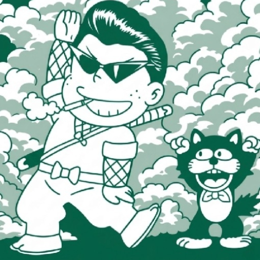
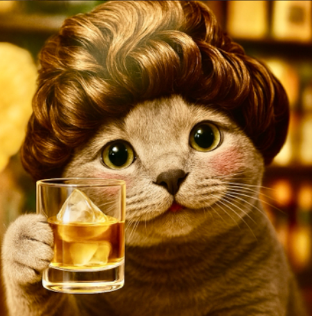
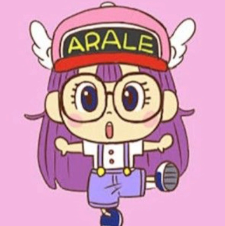
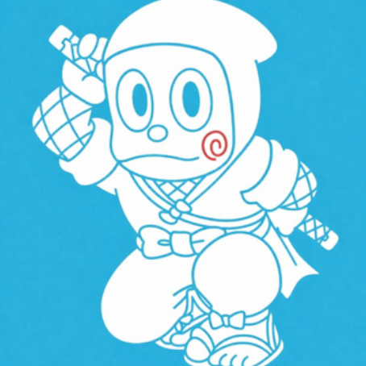

KPt図鑑
produced by つばめ🥷

KPT図鑑 No.21
ケムちゃん
🔥安心基盤の匠
✨スキル
- 全方位フラット接続🤝
- 会話の引き出し無限大📚
- ポジティブ変換機能☀️
🥷つばめ観察日記
連盟内外問わず誰にでも同じ温度で接する、KPTの空気調律師🎋忙しい中でも自然と周りを支え、豊富な言葉で場を彩る😎✨気づけばそこにいるだけで安心できる、KPTに欠かせない生活インフラのような存在✨個人的に上司でいてほしい人👑

KPT図鑑 No.22
ぽてちゃま
🍀癒しと包容力の匠
✨スキル
- KPT初代ヒーラー🌿
- 包み込む安心感🍀
- 優しい心へチャージスタンド🔋
🥷つばめ観察日記
KPTが誇る元祖癒し系🥰柔らかな言葉と穏やかな雰囲気で、そっと寄り添ってくれる存在🌿まるで優しいお姉ちゃんのような安心感で、自然と頼りたくなるKPTの心のよりどころ✨車掌担当の際のコメントも見所だよ🐰

KPT図鑑 No.23
いろまるちゃん
🔥信頼紡ぎと闘志の匠
✨スキル
- 感謝の余韻を残す力✨
- 礼儀作法フル装備🌸
- 静かなる闘魂👹
🥷つばめ観察日記
誰へのお知らせにも心のこもった反応を届け、自然と周りを温かくする存在✨丁寧さの奥には熱い闘志を秘め、戦場では頼れる一面も💥優雅さと強さを併せ持つ、KPTの癒しファイター✨

KPT図鑑 No.24
推しぴ(何なのちゃん)
🔥影の軍師の匠
✨スキル
- 知識継承システム📚
- 背中を預ける信頼力🛡️
- 静かなる影響力⚔️
🥷つばめ観察日記
表舞台に立たずとも、気づけば仲間を支え、多くの強者を育ててきたKPTの影の功労者😊圧倒的な経験値を持ちながら、強者なのに遊び心を失わない余裕の持ち主🍷知略・優しさ・ユーモアを兼ね備えた、まさに忍者ハットリくん